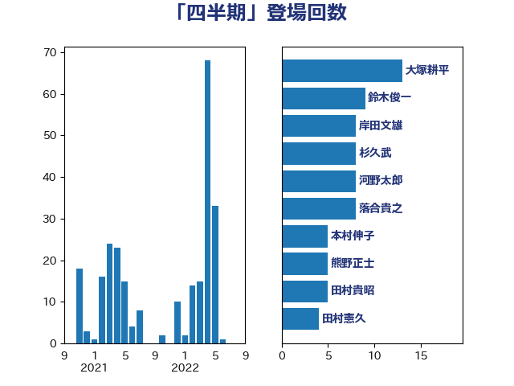

単語「四半期」

| 大塚耕平 | 国民民主党 | 13 回 |
| 鈴木俊一 | 自由民主党 | 9 回 |
| 岸田文雄 | 自由民主党 | 8 回 |
| 杉久武 | 公明党 | 8 回 |
| 河野太郎 | 自由民主党 | 8 回 |
| 落合貴之 | 立憲民主党 | 8 回 |
| 本村伸子 | 日本共産党 | 5 回 |
| 熊野正士 | 公明党 | 5 回 |
| 田村貴昭 | 日本共産党 | 5 回 |
| 田村憲久 | 自由民主党 | 4 回 |
| 上野通子 | 自由民主党 | 3 回 |
| 武部新 | 自由民主党 | 3 回 |
| 牧山ひろえ | 立憲民主党 | 3 回 |
| 大串博志 | 立憲民主党 | 2 回 |
| 小沼巧 | 立憲民主党 | 2 回 |
| 岸信夫 | 自由民主党 | 2 回 |
| 庄子賢一 | 公明党 | 2 回 |
| 福田昭夫 | 立憲民主党 | 2 回 |
| 稲津久 | 公明党 | 2 回 |
| 菊田真紀子 | 立憲民主党 | 2 回 |
| 野上浩太郎 | 自由民主党 | 2 回 |
| 上田清司 | 国民民主党 | 1 回 |
| 中村裕之 | 自由民主党 | 1 回 |
| 井上哲士 | 日本共産党 | 1 回 |
| 古賀友一郎 | 自由民主党 | 1 回 |
| 坂本哲志 | 自由民主党 | 1 回 |
| 室井邦彦 | 日本維新の会 | 1 回 |
| 小倉將信 | 自由民主党 | 1 回 |
| 山下芳生 | 日本共産党 | 1 回 |
| 山本博司 | 公明党 | 1 回 |
| 岩本剛人 | 自由民主党 | 1 回 |
| 平木大作 | 公明党 | 1 回 |
| 後藤祐一 | 立憲民主党 | 1 回 |
| 松島みどり | 自由民主党 | 1 回 |
| 柴田巧 | 日本維新の会 | 1 回 |
| 梶山弘志 | 自由民主党 | 1 回 |
| 武田良太 | 自由民主党 | 1 回 |
| 沢田良 | 日本維新の会 | 1 回 |
| 河野義博 | 公明党 | 1 回 |
| 泉田裕彦 | 自由民主党 | 1 回 |
| 浅田均 | 日本維新の会 | 1 回 |
| 湯原俊二 | 立憲民主党 | 1 回 |
| 玉木雄一郎 | 国民民主党 | 1 回 |
| 田村まみ | 国民民主党 | 1 回 |
| 石川昭政 | 自由民主党 | 1 回 |
| 神田潤一 | 自由民主党 | 1 回 |
| 稲富修二 | 立憲民主党 | 1 回 |
| 緑川貴士 | 立憲民主党 | 1 回 |
| 若松謙維 | 公明党 | 1 回 |
| 藤木眞也 | 自由民主党 | 1 回 |
| 西村康稔 | 自由民主党 | 1 回 |
| 赤嶺政賢 | 日本共産党 | 1 回 |
| 赤木正幸 | 日本維新の会 | 1 回 |
| 逢坂誠二 | 立憲民主党 | 1 回 |
| 阿部司 | 日本維新の会 | 1 回 |
| 階猛 | 立憲民主党 | 1 回 |